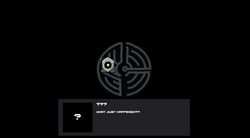

Project Type
Rhythm game
Project Entry
A rhythm game project described as Friday Night Funkin'-inspired, now documented in a dedicated entry page.

Block Party benefits from a devlog structure because rhythm games are heavily about feel. A static summary does not say much about timing, visual feedback, or the relationship between input and presentation.
This page is set up to read like an active project entry: what the target is, what is already present, and what parts would be improved next.
The hard part in a rhythm project is preserving responsiveness while still giving the presentation enough energy. That balance is usually where most iteration time goes.
The next useful additions here would be notes on chart design, feedback timing, and how the visual style supports the beat structure.
